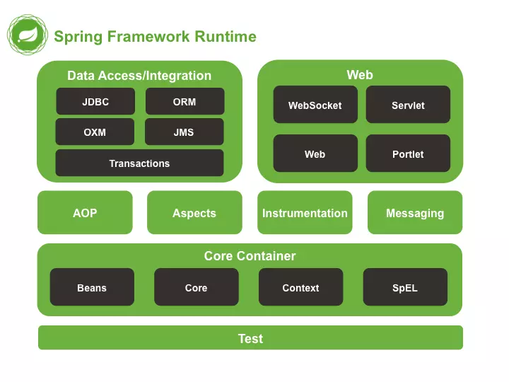

Spring Boot cho Backend
Tại sao chọn Spring Boot cho Backend?
Spring Boot là một framework Java mạnh mẽ, được thiết kế để đơn giản hóa quá trình xây dựng ứng dụng web backend. Nó loại bỏ nhiều cấu hình phức tạp của Spring truyền thống, giúp lập trình viên tập trung vào logic nghiệp vụ thay vì cài đặt hệ thống.
Với Spring Boot, bạn có thể dễ dàng tạo REST API, quản lý dữ liệu với Spring Data JPA / Hibernate, bảo mật bằng Spring Security và triển khai nhanh chóng lên server hoặc cloud. Spring Boot hỗ trợ khởi tạo dự án cực kỳ nhanh chóng chỉ với vài cú nhấp chuột qua Spring Initializr.
1️⃣ Ưu điểm nổi bật của Spring Boot
- Cấu hình tối giản: Không cần file XML dài dòng, chỉ cần vài annotation là đủ.
- Tích hợp dễ dàng: Làm việc tốt với MySQL, PostgreSQL, MongoDB, Redis...
- Bảo mật mạnh mẽ: Tích hợp sẵn Spring Security để quản lý xác thực và phân quyền.
- Hỗ trợ REST API: Tạo API nhanh gọn với @RestController và @RequestMapping.
- Tự động cấu hình: Giúp khởi tạo môi trường chạy mà không cần cấu hình phức tạp.
2️⃣ Ví dụ: REST API đơn giản với Spring Boot
// Controller tạo API chào mừng
@RestController
public class HelloController {
@GetMapping("/hello")
public String sayHello() {
return "Xin chào, đây là ứng dụng Spring Boot đầu tiên!";
}
}
Đoạn code trên là ví dụ đơn giản nhất về một REST API trong
Spring Boot. Chỉ cần vài dòng lệnh, bạn đã có thể chạy ứng
dụng backend hoàn chỉnh và truy cập qua đường dẫn
http://localhost:8080/hello.
“Nhờ Spring Boot, nhóm của tôi có thể triển khai backend cho ứng dụng doanh nghiệp chỉ trong vài ngày, thay vì vài tuần như trước kia. Hệ thống chạy ổn định, dễ bảo trì và mở rộng.”

Dương Tuấn Khang
Lập trình viên
3️⃣ Khả năng mở rộng và triển khai
Spring Boot tương thích tuyệt vời với Docker, Kubernetes, AWS,
Azure, và Google Cloud. Bạn có thể dễ dàng đóng gói ứng dụng
thành container chỉ với một file Dockerfile.
# Ví dụ Dockerfile đơn giản cho Spring Boot
FROM openjdk:17
COPY target/app.jar app.jar
ENTRYPOINT ["java", "-jar", "/app.jar"]
Chạy ứng dụng chỉ bằng một dòng lệnh:
docker run -p 8080:8080 app
4️⃣ Tại sao nên học Spring Boot?
Hầu hết các công ty phần mềm hiện nay đều sử dụng Spring Boot cho hệ thống backend. Việc nắm vững framework này giúp bạn:
- Hiểu rõ cách xây dựng ứng dụng backend theo chuẩn doanh nghiệp.
- Dễ dàng phỏng vấn và tham gia các dự án thực tế.
- Mở rộng sang phát triển fullstack với React hoặc Angular.
- Cải thiện kỹ năng xử lý dữ liệu, bảo mật, và triển khai cloud.
Spring Boot không chỉ là công cụ lập trình, mà còn là nền tảng giúp bạn phát triển sự nghiệp lập trình viên backend vững chắc và chuyên nghiệp.
👉 Nếu bạn đang học Java, hãy bắt đầu với Spring Boot ngay hôm nay — bạn sẽ ngạc nhiên với tốc độ và sự tiện lợi mà nó mang lại!
Thông tin bài viết
- Chủ đề: Spring Boot Backend
- Tác giả: Dương Tuấn Khang
- Ngày đăng: 03 Tháng 10, 2025
- Đọc thêm